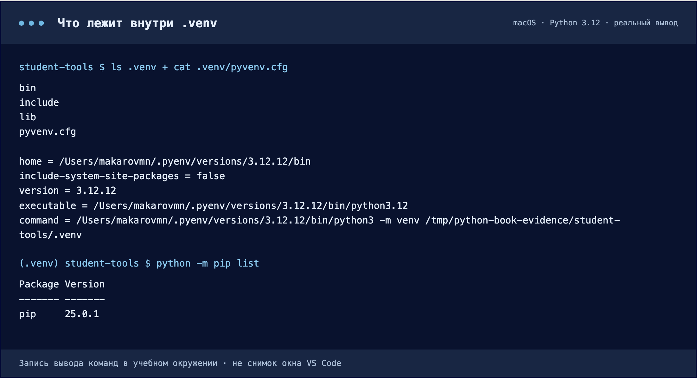
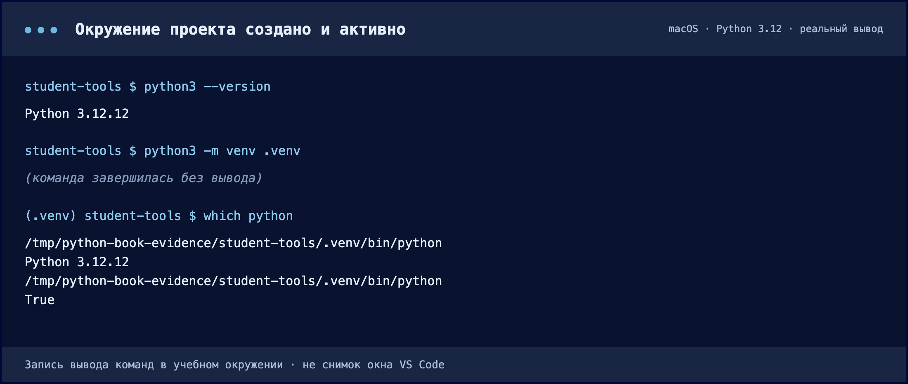

Сначала — своё окружение
Создаём рабочую папку, выбираем Python и понимаем, что на самом деле делает активация.
Зачем начинать с .venv
Представьте два проекта на одном компьютере: одному нужна одна версия библиотеки, другому — другая. Установка в общее место связывает их между собой. Обновление ради первой программы может сломать вторую.
Виртуальное окружение отделяет установленные библиотеки проекта от остальных. Каталог .venv создаётся на основе уже установленного Python: внутри будет исполняемый файл Python или ссылка на него, служебные файлы и собственные пакеты. Это не отдельная операционная система.
Проект — все файлы и папки, из которых складывается программа: исходный код, проверки, документация, настройки и список зависимостей. Наш общий проект — Student Tools. Он посчитает среднюю оценку, сначала обычным текстом, а затем с помощью Rich. В каждой главе мы изменяем эту же папку.
Одинаковое имя папки не делает окружения общими.
01 / Откройте папку проекта
- Где
- Finder / Проводник → распакованная папка.
- Действие
- Распакуйте архив → назовите папку student-tools → VS Code: File → Open Folder.
- Результат
- В Explorer виден корень STUDENT-TOOLS и файл main.py.
- Проверка
- Откройте Terminal → New Terminal. Последний каталог в пути — student-tools.
Распакуйте архив, переименуйте его внутреннюю папку в student-tools. В VS Code выберите File → Open Folder и откройте именно её. Слева в Explorer должен быть виден main.py. Не создавайте проект внутри папки .venv.
Откройте Terminal → New Terminal. Текущая папка терминала должна быть student-tools. Если там другое место, перейдите командой cd "путь к student-tools". В этой книге подпись над командами всегда показывает, откуда их выполнять.
02 / Создайте окружение
- Где
- Терминал VS Code, корень student-tools.
- Действие
- Выберите ОС выше. Выполните проверку версии, затем команду создания ниже.
- Результат
- В Explorer появился каталог .venv; внутри есть pyvenv.cfg.
- Проверка
- Дождитесь возврата приглашения терминала. Если видна ошибка, не переходите к активации.
Нужен установленный Python 3.10 или новее. Выберите вашу систему в переключателе сверху. Первая команда проверяет Python, вторая создаёт папку окружения. Если Windows не находит py, но команда python --version работает, используйте python -m venv .venv.
-m означает «выполни модуль», venv — встроенный модуль создания окружений, последнее .venv — имя создаваемой папки. Успешная команда может ничего не напечатать: проверьте появление каталога в Explorer.

Слева — три папки и файл pyvenv.cfg. В pyvenv.cfg записано, от какого Python создано окружение (home) и его версия. Сразу после создания в окружении установлен только сам pip: список библиотек пуст. На Windows вместо bin будет Scripts.
Скачать текст вывода ↓ · Нажмите на изображение, чтобы увеличить.Содержимое окружения создаёт Python. Свой код туда не переносим и служебные файлы руками не редактируем. .venv — принятое имя папки; .env обычно является файлом переменных окружения. Это разные вещи.
03 / Активируйте и проверьте
- Где
- Тот же терминал, корень student-tools.
- Действие
- Выполните команду активации ниже, затем проверку sys.executable.
- Результат
- Путь к Python содержит .venv; сравнение префиксов даёт True.
- Проверка
- Сопоставьте свой вывод с изображением. Ваш абсолютный путь будет другим.
Папка уже существует, но терминал ещё использует прежний путь поиска команд.
python -c "import sys; print(sys.executable); print(sys.prefix != sys.base_prefix)"Первой строкой должен появиться путь внутрь student-tools/.venv, второй — True. Префикс (.venv) в приглашении полезен, но путь к интерпретатору — более надёжная проверка.
Активация меняет поиск команд в текущем терминале. Другой терминал может продолжать использовать базовый Python. Команда deactivate отменяет активацию, но не удаляет окружение.

Слева от приглашения может быть (.venv), но проверять нужно сам путь. В этом прогоне проект находится во временной папке /tmp; у вас будет собственный путь.
Скачать текст вывода ↓ · Нажмите на изображение, чтобы увеличить.Проверьте себя · Почему нельзя просто скопировать .venv одногруппнику?
В окружении есть локальные пути и платформенные файлы. На другом компьютере его создают заново из установленного Python; список библиотек передают отдельно. В главе 2.6 подготовим такой список.
Документация к теме
Python: venv · Python: модули и пакеты · VS Code: Python environments · pip freeze